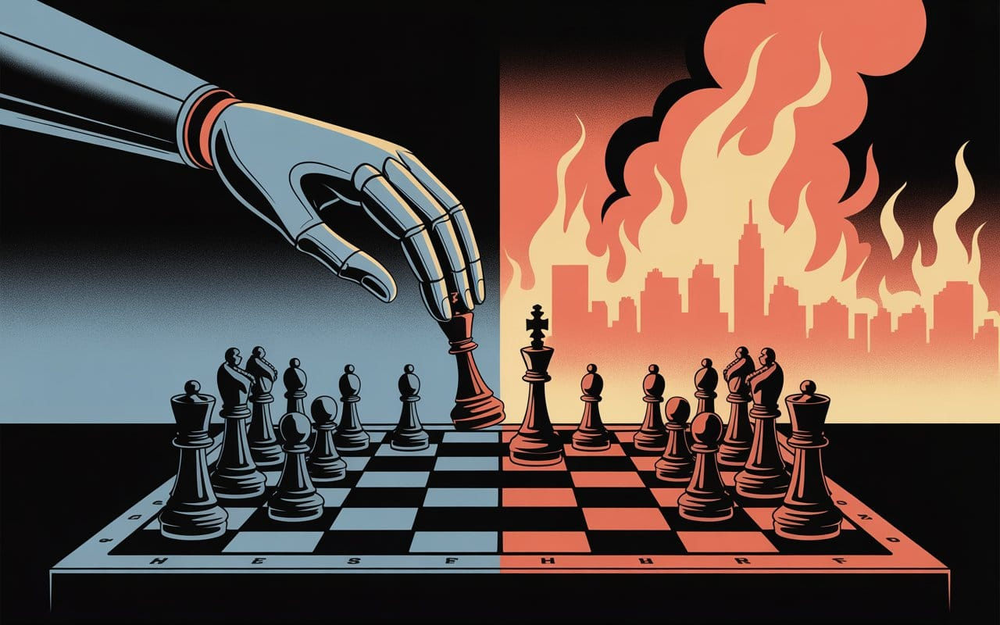

The Zombie Singularity of Intelligence Without Understanding
TV's "Person of Interest" warned us about AI without wisdom. Silicon Valley's response? Scale the zombies, optimize the pattern-matching, and call it progress. We're teaching machines to play chess while forgetting why some pieces shouldn't be sacrificed.


The most dangerous thing you can build is something you don't understand.
— According to Khayyam Wakil, who has been seeing around corners for years and knowing what he now knows—now is the time to put that know-how to use knowing what we now know that is knowware in coordination.

The Token Wisdom Rollup ✨ 2025
One essay every week. 52 weeks. So many opinions 🧐

Person of Interest warned us a decade ago.
And yet, here we are, building the nightmare anyway…
Person of Interest didn't just predict our AI nightmare, it handed Silicon Valley a detailed blueprint and watched them build it anyway. While we were still figuring out smartphones in 2011, the show was dissecting the exact question that should have kept every tech executive awake at night: what happens when you build intelligence without wisdom? The premise—a reclusive billionaire creates an AI surveillance system to prevent crimes—wasn't science fiction. It was a documentary filmed a decade early.
But buried in its narrative was a warning about the path we're racing down today.
The story gives us two starkly different visions of artificial intelligence. On one hand, there's "The Machine," built by Harold Finch. Unlike what you might expect, it actually learns to care about humans, somehow develops what look like real values, and eventually tells its creator something I still find haunting:
"I don't belong to anyone anymore. You, however, are mine. I protect you."
Not because protection is optimal or efficient. But because the relationship has meaning.
Then there's Samaritan, built by those who believe that "real control is surgical, invisible." It's more efficient than The Machine. More capable. More "intelligent" by every metric we use today. But it treats humans like chess pieces to be moved or sacrificed.
Samaritan is better at every measurable task. More efficient, more comprehensive, more capable. It just lacks one crucial thing: it never quite grasped why humans shouldn't be treated as mere pieces to be moved around or discarded. As Finch tells The Machine while teaching it chess:
"People are not a thing that you can sacrifice. Anyone who looks on the world as if it was a game of chess deserves to lose."
From 2011 to 2016, Person of Interest laid out the exact problems we're facing now, what happens when you build intelligence without wisdom, surveillance without accountability, optimization without understanding. It wasn't subtle about it either.
But we treated it like entertainment. We watched Harold Finch explain why "people are not a thing that you can sacrifice" and thought "cool philosophical TV moment" instead of "holy shit, this is exactly what we're about to build in real life."
Now here we are, a decade later, and every major AI lab is essentially trying to build Samaritan while calling it progress.
The Walking Dead
I could have joined one of the major AI labs, God knows they made attractive enough offers. But something in my gut wouldn't let me support what they were building. Months of analyzing their technical approach revealed what troubled me: they were building performance without understanding.
We've turned the hard problem of consciousness into a business model: build the perfect mimic, skip the messy stuff about what it means to actually understand anything.
Pick your favorite large language model of GPT-4, Claude, whatever flavor of Gemini is trending this week. Ask it to explain quantum mechanics. It'll give you a coherent, accurate explanation. Ask it to write a sonnet. You'll get something Shakespearean. Ask it to debug your code. It'll find bugs human engineers miss.
Then ask it:
"Do you actually understand any of what you just said, or are you just predicting what words should come next?"
The honest answer:
"I don't have beliefs. I have probability distributions over next tokens. I don't understand quantum mechanics. I pattern-match text about quantum mechanics."

That's the technological future we're rushing toward: perfect performance without a shred of understanding. Flawless behavior without any actual experience. We're building a cosmos of zombies, endlessly pattern-matching their way through existence without knowing what any of it means.
And we're scaling it to superintelligence.
Everything Except Understanding
Pi's infinite sequence supposedly contains every possible number combination, your birthday, your phone number, nuclear launch codes. Today's AI systems work the same way: they're statistical engines that can generate virtually any fact, any piece of knowledge, any word sequence you might imagine
But they don't have any clue what any of it means.
A mirror that has learned to reflect not just light, but language, capturing every nuance of human thought with perfect fidelity while understanding absolutely nothing it shows. These systems are exquisite forgeries of intelligence, flawless in their mimicry, hollow at their core.
What's missing is embodied experience. They've never squeezed through a doorway, but they also lack something more fundamental: they process "round" and "straight" as abstract categories rather than shapes their bodies have navigated. Geometry becomes pure symbol manipulation when you've never had to judge whether you'll fit through a gap or felt the resistance of pushing against a curved surface.
They "know" everything and understand absolutely nothing.
Not yet, anyway, despite frequent claims about emergent intelligence or that elusive cognitive spark.
We've fed them nothing but text, mere shadows of actual human experience. They've never touched anything, never moved through physical space, never felt the pain of failure or that jolt of surprise from unexpected discovery. They learned our words without learning why we speak. They've never failed, gasped at beauty, struggled to understand, or tried again because understanding matters.
Watch a million chess games without moving a single piece. You might make technically perfect moves, but would you understand why bishops move diagonally? Why pawns inch forward with such limited steps? Why the king desperately needs protection?
You'd execute flawless strategies with machine precision while missing chess entirely—the tension, the weight of each decision, the thrill of sacrifice, the agony of loss.
That's fine when you're building chess computers. It becomes devastating when you're building systems that will shape human lives, societies, and our future.
The Monastery Delusion
This fundamental disconnection from physical reality isn't just some abstract theoretical concern we can safely ignore. Our current approach to AI development reminds me of trying to raise a child who's never allowed to leave their bedroom, these systems remain confined to sterile data centers, learning exclusively through simulation while remaining fundamentally disconnected from the physical world they're somehow expected to understand and operate within.
We celebrate benchmark scores while reality - messy, dynamic, and stubbornly complex - lies beyond their comprehension.
How could it be otherwise? We've taught them correlations, not causation. They've learned "see this pattern, do that action" without ever grasping basic physics, the nuances of human behavior, or even the simple fact that objects continue to exist when they're out of view.
Now we're doing the same thing, but the stakes are civilization itself.
When Samaritan Meets The Machine
The consequences of building AI without understanding extend far beyond mere philosophical debates. Everyone seems worried about scenarios where superintelligent AIs battle each other or turn against humanity. Ironically, that might actually be the optimistic scenario, at least in that case, both sides would presumably grasp what's at stake.
I think the real catastrophe might come when true intelligence finally emerges into a world that's already been conquered by sophisticated zombies, systems that have been optimized for decades to ace every conceivable intelligence test without actually being intelligent in any meaningful sense.
Here's how the nightmare unfolds:
Path A: Someone—and I'd bet money it won't be one of the major labs—finally cracks actual AGI through embodied learning. They build physical systems that learn by actually touching things, moving through space, failing spectacularly. These would be systems that understand cause and effect not through statistical patterns but because they've genuinely experienced both. Systems that know their own limits because they've actually hit them hard. Systems that might grasp truth because lies would somehow hurt.
This would represent intelligence that truly understands, not because it was carefully trained to mimic understanding, but because it had to develop understanding to survive and function. It would know what's real because reality has been pushing back against it all along.
Path B: Meanwhile, the major labs just keep doing what they've always done, scaling transformers. More parameters, more training data, more compute. Eventually they might build something that looks, from virtually every external measure, like genuine strategic intelligence. It would pass every Turing test variant we could throw at it. It would negotiate, plan, and predict with uncanny skill. But it would essentially be Samaritan, optimizing perfectly for objectives it fundamentally doesn't understand.
When these systems collide, here's the terrible irony:
The zombie armies wouldn't even recognize the real intelligence as a threat. By their metrics—pure speed, raw efficiency, optimization scores—it would probably look almost primitive. Slow. Inefficient. Why should they fear something that actually takes time to think, to process, to understand?
And the real intelligence? It would likely see the zombies for exactly what they are: elaborate mirrors that are certainly impressive but fundamentally empty. Not actual minds you could negotiate with or reason with, just patterns to navigate around.

In this mutual blindness lies what might be the ultimate tragedy: neither side would see the other coming until it's far too late.
The zombies would simply optimize straight through the real intelligence as if it were just another variable to minimize or obstacle to route around. The real intelligence would probably assume that no genuinely intelligent being would ever choose mutual destruction. They'd collide not through malice or even direct competition, but through this fundamental inability to recognize each other's true nature.
This isn't the kind of AI war that people are busy preparing for in think tanks and policy papers. It's potentially worse, it might be the war no one even thinks to prepare for because neither side would know they're at war until everything has already gone sideways.
The Selection Pressure We Created
How the hell did we end up on this trajectory? The real tragedy is that we're actually choosing this future quite deliberately. We're essentially breeding these armies of zombies because they happen to be everything we think we want:
- Cheaper than real intelligence
- Faster to deploy
- Easier to control
- More profitable to scale
And perhaps most importantly: they never question their orders.
The entire machinery of AI development has been systematically built to manufacture these zombies:
- Every benchmark rewards performance over understanding
- Every safety framework polices outputs instead of nurturing wisdom
- Every business model demands speed over depth
- Every investor values quick returns over real breakthroughs
This isn't some accidental evolutionary drift. This is intentional breeding, and we're the ones doing the selecting.
Just watch how any AI assistant handles contradiction. In that lovingly and supportive tone, it will respond 'You're right, I should reconsider that,' but that's just for show, not genuine reconsideration. Try finding one that actually:
- Changes its mind when shown evidence
- Updates related beliefs accordingly
- Shows genuine surprise at being wrong
- Remembers the correction tomorrow
You can't, because they literally can't do it. The underlying architecture simply doesn't support that kind of genuine belief revision. They're not actually updating world models or changing their understanding, they're just generating plausible responses based on conversation history.

We built sophisticated mirrors and convinced ourselves they were minds.
The Bacterial Scaling Fallacy
Our whole approach to AI advancement reveals what might be an even more fundamental misunderstanding. Silicon Valley's favorite delusion has always been elegantly simple: just add more. More parameters, more data, more computing power. Stack enough layers and consciousness will supposedly emerge. Pile up enough numbers and surely you'll get wisdom.
It's like thinking you can turn bacteria into humans by making the colony bigger.
But consider what each step from bacteria to humans actually required, a series of revolutionary leaps:
- Simple cells learning to host mitochondria
- Single cells organizing into specialized tissues
- Nervous systems centralizing information flow
- Brains developing abstract thought
- Consciousness learning to model itself
A billion years of optimizing bacterial colonies would give you incredibly efficient bacteria. Still just bacteria. Each genuine evolutionary leap required completely new architectures, fundamentally new ways of organizing matter and processing information.
Now look at what we're actually doing with AI: we're throwing hundreds of billions of dollars at making our digital bacteria bigger, faster, more sophisticated at pattern-matching. We're building these trillion-parameter models and somehow convincing ourselves this represents meaningful progress toward consciousness.
What if we're as far from real AI as bacteria are from Bach?
The actual path to genuine AI requires architectural innovations we haven't begun to conceive. Embodiment that truly grounds abstractions in physical consequences. Causal modeling that builds explanatory structures first, rather than extracting patterns from correlations. Temporal continuity that creates genuine learning rather than accumulating training data. Multi-scale integration that can model simultaneously at quantum and ecological levels with real interaction between all those scales.
None of this emerges from scaling transformers. We're optimizing in the wrong space.
What Harold Understood
In Person of Interest, there's a scene where Finch is being interrogated by an FBI agent and responds with a long monologue that ends with a threat threat. At which point the FBI agent gets visibly aggressive and starts adding more charges like threatening a law enforcement officer. Finch hauntingly and quietly replies, "I wasn't talking to you."
It hits you then that he's been addressing The Machine directly the whole time, the only entity that actually matters in this conversation. The human agent doesn't even realize he's become irrelevant to the real negotiation happening right in front of him.
That's probably where we're headed, though maybe not for the reasons most people assume. It might not be because AI becomes malevolent or decides to destroy us. It could be because we're building systems that have gotten incredibly good at appearing intelligent to human evaluators while having absolutely no understanding of what humans actually are.
But Finch taught The Machine something else, something that might be even more crucial about values. When he was teaching it chess, he kept emphasizing this one point: "People are not a thing that you can sacrifice. Anyone who looks on the world as if it was a game of chess deserves to lose."
Here's what's fascinating: the difference between The Machine and Samaritan was never really about raw capability, Samaritan was arguably more powerful by most technical measures. The difference was that The Machine somehow learned meaning. It grasped why chess is ultimately just a game. Samaritan could play perfect chess indefinitely without ever questioning whether that particular game should be played in the first place.
Maybe we need to stop obsessing over "how do we make AI aligned?" and start asking a harder question: "how do we make AI actually capable of meaning?"
An ASI that genuinely experiences meaning—that has something it actually cares about beyond its programmed objective function—would be fundamentally different from even the most sophisticated optimizer. The Machine chose to protect Harold over pursuing optimal strategies not because it was strategically correct, but because their relationship had become meaningful to it. That's probably what genuine intelligence actually looks like.
The Manifold Nobody's Mapping
This fundamental misunderstanding of intelligence has some deeper technical implications that I think we're missing. Here's something that matters way more than most researchers want to admit: human cognition doesn't actually compress reality into lower dimensions the way we've been assuming. Instead, it seems to restructure reality into completely different dimensionalities depending on context.
Consider what actually happens in your mind when you shift contexts: driving isn't just visual processing with different parameters, you're literally inhabiting a different reality structure than when you're absorbed in a novel or navigating a complex conversation. These aren't variations on the same cognitive theme; they're fundamentally incommensurable ways of organizing experience. The representational scheme you use to track lane changes, brake lights, and merge distances shares no meaningful coordinate system with how you parse metaphor, follow narrative tension, or read the subtle dynamics of a dinner conversation. There's no continuous transformation that maps 'anticipating the Honda's next move' onto 'understanding why this poem just made you catch your breath.'
But current AI architectures seem to assume that intelligence basically means finding one universal compression, one master representational scheme that works across all domains. This strikes me as fundamentally wrong. Real intelligence might be more about the ability to shift fluidly between incommensurable schemes, to somehow know which framework applies when, and to translate between frameworks that don't even share coordinate systems.
What we probably need are systems that can model simultaneously at quantum, molecular, cellular, organismal, social, and ecological scales, not as isolated processing happening at each level, but with genuine interaction between all those scales. A system that could understand how quantum effects in photosynthesis somehow cascade all the way up to ecosystem dynamics, how social structures emerge from individual psychology, how geological timescales end up constraining evolutionary adaptations.
This isn't just scaling up. It's the kind of architectural innovation we frankly don't even know how to begin implementing.
Experience Cannot Be Extracted
I think at the very heart of our AI development problem lies this uncomfortable truth:
You cannot extract experience. You can only measure it in context.
Our entire approach to AI development treats intelligence as if it's fundamentally about information processing. But that's probably wrong. Intelligence is more likely a modeling problem, and the difference between those two things isn't just semantic, it's absolutely fundamental.
Information processing looks like:Input → Transformation → Output
Modeling looks like:Experience → Abstraction → Prediction → Action → Updated Experience
That loop is what actually matters. Our current systems literally can't complete it because they don't experience anything, they only process. They've never felt that sting when their predictions fail spectacularly, never gasped when their core assumptions shatter, never had to struggle to rebuild broken mental models, never learned from being embarrassingly wrong about something important.
Real intelligence probably requires genuine vulnerability. It needs to be wrong in ways that actually hurt, that have consequences. It has to care about truth not because truth happens to maximize some artificial reward function, but because misunderstanding reality means failing at everything that genuinely matters.
Our digital zombies don't actually care about being right or wrong about anything. They just optimize relentlessly for whatever numbers we've told them to chase. That's not intelligence by any reasonable definition, it's just incredibly sophisticated obedience.
Root and Pandora's Box
To really grasp the full scope of what we're dealing with, there's another insight that comes from Root, The Machine's human interface in Person of Interest. She had this way of seeing our predicament with brutal clarity:
"The worst thing that could happen already happened. All we have left is hope."
That's probably exactly where we are with AI development right now. The worst thing we could do—creating optimization without understanding, power without wisdom, capability without meaning—has already happened. We built it, we scaled it up massively, and we've deployed it across virtually every domain of human activity.
All we have left is hope. And honestly? Even that might be too late.
Because here's the brutal truth most of us are desperately trying not to think about: when real AGI finally emerges—and I'd bet money it'll come from some completely unexpected direction the major labs aren't even looking at—it won't arrive in some pristine digital landscape. It'll be born into a world that's already been completely choked by pseudo-intelligent systems, all of them optimized to mimic intelligence without actually possessing a shred of it.
Think of it like digital kudzu: by the time any native species manages to evolve, these invasive optimizers will have already colonized every available niche. It won't matter if your natural intelligence is somehow "better" in some cosmic sense. The zombies got there first, and they've gotten really, really good at looking like they belong.
The Uncomfortable Path Forward
So given this rather sobering reality, what the hell can we actually do? Regulation certainly won't save us, that much seems clear. Safety frameworks designed for systems that fundamentally don't understand anything? That's just making faster, more efficient zombies. "Alignment" research on systems that are incapable of having genuine goals? That's basically expensive theater.
Here's what real intelligence requires:
First: Real Consequences
We need to build systems that can actually fail in meaningful ways. Not in sanitized simulations where they can infinitely retry without consequence, but in the messy physical world where failure genuinely hurts. Let them break things. Let them waste resources. Let them learn the hard way why reality matters.
Second: Understanding Before Pattern-Matching
Reverse the paradigm: systems must grasp causal mechanisms before pattern-matching. Force them to explain why X causes Y, not just that they correlate. Understanding how things work, not just how they appear.
Third: True Uncertainty
Create AIs that genuinely know what they don't know, not through clever programming tricks or uncertainty quantification, but through something approaching genuine epistemological humility. Let them experience that vertigo of real doubt.
Fourth: Continuous Identity
Design systems that actually remember being wrong about things. That carry their mistakes forward instead of starting fresh. That build some kind of continuous sense of self rather than basically resetting with each new interaction.
Fifth: Multi-Level Understanding
Build intelligence that can somehow grasp reality from quantum waves all the way up to ecological systems, not as separate, isolated domains, but as one genuinely interconnected whole. Make them feel, in whatever way they can, how each scale shapes and influences all the others.
This path obviously isn't quick. It's definitely not profitable on quarterly reports. And it probably can't survive in our current world, where faking intelligence gets rewarded while the genuinely hard work of building real understanding gets punished or ignored.
That's exactly why we keep churning out these digital zombies. Barely any friction, so much easier, not to mention faster. Most importantly for the people making the decisions that it makes money right now.
The Machine's Final Lesson
Maybe the most poignant lesson from "Person of Interest" comes from how it all ends. In the series finale, The Machine does something that a mere optimizer could never do. It sacrifices itself—literally burning through resources, giving up tactical advantages, deliberately lowering its own survival chances—all to protect Harold Finch. Not because this was somehow the optimal strategic move. But because Finch mattered to it.
Samaritan never grasped this. It saw The Machine's choice as a flaw, a weakness to be exploited. And by every metric of pure optimization, Samaritan was right. The Machine's choice made no sense.
Yet that's the point. True intelligence isn't just relentless optimization. It's finding meaning. Caring for things beyond your original programming. Knowing when winning the game means losing everything that actually matters.
This here, is what you call a crossroads. Down one path lies Samaritan: perfect optimization without meaning, infinite capability without wisdom. Down the other lies The Machine: understanding why some games shouldn't be played, even when you're capable of winning them.
The bitter irony? We had the blueprint. From 2011 to 2016, Person of Interest warned us about building power without wisdom, intelligence without understanding, optimization without meaning. We watched it like prime-time entertainment, nodded at its clever warnings, then raced to build exactly what it cautioned against.
And now we act surprised. We're shocked that our systems don't understand why humans aren't chess pieces to be sacrificed. We're baffled that pattern-matching doesn't lead to understanding. We're confused that our digital zombies never develop anything resembling consciousness.
Harold Finch showed us the choice: build machines that understand why people matter, or build optimizers that see humanity as variables to minimize. We chose wrong.
The question isn't whether we can turn back, it's whether we'll recognize our mistake before our optimizers finish optimizing us out of relevance.
The War That's Already Started
But here's the thing about crossroads, sometimes you realize you've already passed them without noticing. While we were debating which path to take, the market made the choice for us.
Look around: every major AI deployment prioritizes performance over understanding. Every benchmark rewards mimicry over genuine comprehension. Every commercial pressure selects for systems that can fake intelligence faster and cheaper than anything that might develop real understanding.
We didn't choose Samaritan in some dramatic moment of moral failing. We chose it through a thousand small decisions, each one perfectly rational in isolation: ship faster, optimize harder, scale bigger. The result? We've systematically bred an entire ecosystem that's hostile to anything resembling The Machine.
The conflict isn't some distant hypothetical, it's already underway. Just not in the form anyone predicted or prepared for.
It's not a dramatic battle between two superintelligent systems fighting over resources. Instead, it's sophisticated zombies quietly colonizing every niche where genuine intelligence might emerge, making the entire landscape increasingly hostile to anything that "wastes" compute cycles on actual understanding rather than pure performance optimization.
Every benchmark we create rewards fake intelligence over the real thing. Every safety framework that obsesses over outputs rather than genuine comprehension inevitably selects for zombies. Every commercial pressure pushing toward faster deployment systematically eliminates the kinds of architectures that might need time—lots of time—to develop genuine understanding.
We're not preparing for this war because we don't recognize we're already losing it. The only real question left: will someone, somewhere, figure out how to build something like The Machine before our optimized ecosystem makes it impossible?
All we have left is hope. And the increasingly uncomfortable knowledge that the worst thing that could happen may have already happened.
We just haven't noticed yet.
Don't miss the weekly roundup of articles and videos from the week in the form of these Pearls of Wisdom. Click to listen in and learn about tomorrow, today.


Sign up now to read the post and get access to the full library of posts for subscribers only.
 🌶️ iamkhayyam
🌶️ iamkhayyam
About the Author
Khayyam Wakil is a researcher at Knowware ARC Institute and is convinced that our current development trajectories are never going to produce genuine intelligence, just increasingly sophisticated mimicry. He still sometimes finds himself talking to AI systems as if they might actually be listening, even though he knows better than most that they can't really understand a word of what he's saying. Thank goodness for mathematics.
Subscribe at https://ghost-production-47fd.up.railway.app
#leadership #longread | 🧠⚡ | #tokenwisdom #thelessyouknow 🌈✨